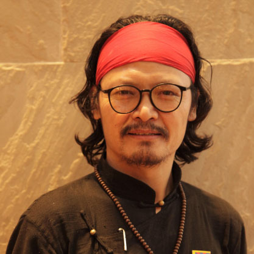

Tibetan Art
Tenzin Tsundue
Nowhere to Call Home
Boarding a crowded Delhi Metro train, I was crammed up with four college boys who seemed quite
amused by my Tibetan face. As if the grins exchanged among them weren't enough, one boy let out
a
catcall 'Ching chong ping pong'. I face this every day and usually don't have the time or energy
to react to
such racist verbal attacks. Since there were a couple of stations ahead, I inched closer to the
teenager, shook
hands with him. While still holding his hand I said, 'Yenna da, yenna wennu?' (Hey man, what do
you
want?). They knew it was one of the four South Indian languages but couldn't even guess which.
Then I
taunted him in Hindi: 'Aap koTamil nahin ati hai kya?' (So, you don't speak Tamil?). By then,
the entire
crowd on the train was staring at us, listening to every bit of the exchange.
To this new-found audience, projecting my voice I gave an impassioned lecture on Indian
nationalism,
quoting the right-wing Indian Prime Minister about the beauty of India's unity and diversity
among its
1.25 billion population. By now, the entire coach vowed silently never to take on a 'chinky' in
public.
Until the mobile revolution, when wires connected the world, we encased ourselves in STD/ISD
booths to
make phone calls. International trunk calls were expensive, but a certain call package made
phone calls to
Tibet affordable. Since half of Dharamshala Tibetans came from Tibet in recent years they all
called Tibet
regularly. This was the only direct link between exile and home.
Once, on the Tibetan new-year, Losar, I watched a long line of young men and women outside a
phone
booth in McLeod Ganj. One by one the refugees enter the cubicle, speak to their loved ones in
Tibet, cry,
and come out emotionally wrecked, then pay and leave. I called the booth the Cry Box. I realized
that the
maximum number of Tibetans in Dharamshala cry during Losar.
That evening, as I walked down the hillside taking the shortcut through the pine woods and oaks,
I
reflected that they were fortunate to have someone to cry to, a house to call home. Being
exile-born myself,
and having been deposited in a boarding school as a semi-orphan from early childhood, I find it
painful
even to write here that I grew up distanced from my family. That night I wrote:
‘Losar is when we the juveniles and bastards
call home across the Himalayas
and cry into the wire.'*
Through the profound loneliness of being far away from parents and our imagined homeland, I
often
thought that we were children of our circumstances, and that history was our father and the
culture that
nourished us was our mother.
As refugees, we have been physically uprooted from our homeland, but as transplants we are
unable to
settle down in the foreign land. Over and above that even the future looks bleak today. As
born-refugees
we have nowhere to call home. My parents' generation look to the past with nostalgia for the
memories of
the homeland they left behind, but as exile-borns, for us, more than the borrowed memory, our
history, the
dream of liberating our country fires our imagination. We look to the future with hope. Freedom
is my
first inspiration in life.
My parents were teenagers when they followed His Holiness the Dalai Lama into exile in 1959,
escaping
the persecution by Mao's army. Initially, most Tibetan refugees worked as road construction
labourers in
the early rehabilitation period. My mother tells me I was born in a tent in a roadside coolie
camp in Lahaul
valley in the early 1970s.
I must have been a restless toddler. Mother says she used to tie a rope around my waist and peg
it on the
roadside while they broke stones and laid the road. After my father's death in our camp in
Manali, north
India, we moved to Kollegal in the South Indian state of Karnataka, and pioneered the Tibetan
settlement
most distant from the Himalayas. I was two-and-a-half-years-old.
I first heard about Tibet from my grandmother. She was a store-house of stories. Her tales about
Tibet
built up an imagination of a country we had never seen. Our refugee camp, being set up on the
outskirts of
Sathyamangalam jungle, the thickest jungle in all of South India where the notorious outlaw
Veerappan
used to hunt elephants and logged sandalwood trees, we had been rehabilitated truly in the
middle of
nowhere.
There, in the heat and dense jungles of Karnataka, my grandmother told us stories of
snow-mountains and
yaks; of apples, peaches and apricots. Momo la had songs for everything: songs for games,
skipping, farm
work in our maize fields and the long walks to the local vegetable market. She told us stories
of Aku
Tompa's wit and wisdom. And this is how we became Tibetan, even after being born in India and
never
seeing the real Tibet.
Every once-in-a-while the afternoon somnolence in our village was broken by a shrill sound from
the
Indian woman who came into our camp to sell the popular South Indian rice-cake snack – idlis.
Bored with
our bland and over-cooked Tibetan food, we kids rushed towards her. We loved the soft idlis
dipped in
spicy masala soup called sambar with a dash of coconut chutney, all served on a banana leaf.
Sometimes the
ice-cream man came by on his bicycle with a bullhorn blaring its pom-pom greeting.
On other occasions it was the bucket exchange man shouting in Tibetan in a long wavering tone
'Ha...yang... dung...pey...'. Having never gone outside our refugee colony, I had often
wondered, and
even asked my mother, where these Indians came from, not realizing we were the ones who came
from
outside, all the way from the high Himalayas.
But it was not until in school that I first understood that we did not belong to the country we
were born
into and that we had lost the independence of our country and were now living outside Tibet at
India's
sympathy. This shattered my little boy's pride. This initial hurt transformed into anxiety as I
imagined our
people being blind- folded, knelt down with hands tied behind them, then shot in the back of
their heads.
This, their children were made to watch. As the body slumped into the pit, the kids
cried.
And then the guilt that we lived in freedom, while our brethren suffered tyranny which was
replaced by the
great resolve to struggle for the freedom and dignity of our people even though it required a
herculean
effort. This resolve inspired me to take a lifelong pledge. I was eleven-years-old. Today, I
honour this
pledge with a symbolic red bandana that I wear on my forehead, and have vowed never to take off
until
Tibet is free, and to work for Tibetan freedom every single day.
After schooling, my first foray outside the Tibetan community was Madras, the capital of the
Tamilian
world in South India. I was shocked, not only by the people, place and language, but also by the
palate. My
tummy, raised on Tibetan gastronomy, was being tested by fiery masala foods. My childhood snack,
idlis,
resurfaced, but this time as the staple main course. In the first week, the tangy masala meals
were fun.
However, by the third week my Tibetan digestive system started to give up. The light rice meals
not only
soon made us hungry again; the masala burned our guts.
Often, in the middle of the night, I sat up on my bed, pressing a wet pillow to my belly while
trying to
study. My guts burned and I regurgitated a sour juice up my gullet. Combined with the anxiety of
tackling
Shakespeare, Tagore and Subramanium Bharathi, I stayed late on my bed in the half-lit room, and
cried
deep into the night.
Now, South Indian cuisine is one of my favourites and even after twenty-five years I can still
show off a
smattering of Tamil. Where adaptation meets a dead end, creativity takes the lead forward;
perhaps exile is
the most fertile ground for growth.
Two years ago, I went on a speaking tour of the UK. Tibetans living in the towns and cities that
I visited
hosted us. After much speaking, travelling and interviews, when we gathered for dinner with
long-lost
friends, the food was inevitably rice, dal and curry, typically Indian. I realized Tibetans have
gone to the
West, but culturally they have never left India.
Today almost seventy thousand Tibetans have emigrated to the West and they have not only become
citizens of the world, but preserved their identity. However, the third-generation youths are a
concern; like
most emigrant children, they have inherited the blood and the stories, but mostly not the
language.
When my classmate buddy, Choegyal, dropped out of regular college, friends thought he was
straying
because of his fad − music. He used to listen to Hindustani music when none of us had developed
a taste
for it. He used to go 'aaaa aaaa', drawing clouds in the air with his hands as he tried to sing
intricate ragas.
Many years later I saw him leading singing tours in Australia, packed in an old sputtering brown
mini-van.
He travelled for months singing and telling stories of Tibet in various villages and towns. He
sings long
arias of traditional Tibetan pastoral tunes which are immediately arresting and soulful. There
is a deep
sense of longing and loneliness in his melodies. Recently he has been nominated for a Grammy,
his first
global recognition.
During a phone conversation a few years ago, a Tibetan from Tibet told my friend in Sweden –
with a
great sense of pride – that Chinese in Tibet still did not dare to walk alone in Tibetan
neighbourhoods as
they fear being knifed or mugged. My friend asked him how that was possible, as the Chinese were
now the
majority in Tibet. The native observed that the Chinese had not yet overcome their archetypal
fear of
Tibetans and Mongolians as barbarians, and that Chinese exoticization of Tibetan culture has
further
reinforced this civilizational stereotype.
As a poet and former political prisoner, my friend Phuntsok Wangchuk had always been the first
to speak
up against Chinese propaganda in Tibet and for which he had been tortured and jailed for six
years. But,
the anti-Japanese propaganda films he had enjoyed in Tibet seemed to have worked on him. As a
result,
when he first arrived in Dharamshala, he couldn't believe his eyes watching the almost
exaggerated
politeness, and the courtesy regime of the Japanese youngsters who bowed thrice before serving
the Tibetan
political prisoners with food and clothing.
Tsewang Dhondup arrived in Dharamshala with his wounded arm slung around his neck. He said, 'I
hid in
the mountains for months and escaped Tibet to bear witness to the atrocities I have seen with my
own eyes
and suffered myself.' Tsewang was shot twice in the Uprising-protest that spread across the
Tibetan
Plateau in the months leading up to Beijing Olympic Games in 2008.
This Uprising gave birth to two movements: the Lhakar Movement celebrates and instills cultural
resistance while a series of unabated Self-immolations demanded 'freedom for Tibet and the
return of His
Holiness the Dalai Lama to Tibet'. So far, there have been 157 known cases of Tibetans burning
themselves inside Tibet alone, making their ultimate sacrifice of life for freedom.
Awhile back, a friend's stay with her family in Tibet was cut short and she was told never to
return. She
told me that the entire country of Tibet has been under lockdown; even the few passports issued
have been
revoked. Every individual has been registered as a number and pinned down to each small unit of
dwelling
and their movement mandatorily kept under surveillance. Tibet is now a police state. To mine
lithium,
copper, gold and rare-earths, China's mining in Tibet is pushing Tibetan nomads and farmers off
their
ancestral land, coercing them to rehabilitate to alien and artificial villages, much like how
White American
colonists transplanted Native Americans into fenced plots called 'Reservations'.
Once, on a long train journey through central India, I sat down on the carriage's entrance
footboard with a
stranger. Like me, my co-passenger, Ramchand, didn't have a reserved seat. Over a cup of chai,
he looked at
my face and enquired if I was Chinese. Hiding my immediate irritation, I put my best foot
forward and
declared: 'Hum Dalai Lama admi hain' (I am a Dalai Lama follower). That didn't ring a bell with
him.
Now, I found myself in a crisis as his assumption still hadn't changed.
Banking on my ultimate resort I said: 'I belong to the Mount Kailash country'. He blinked. For
his
ignorance, I wanted to take revenge. So, I asked Ram.
Me: Lord Shiva lives on Mount Kailash? Ram: Yes.
Me: Mount Kailash is in Tibet? Ram: Yes. Yes.
Me: Mount Kailash has been Shiva's abode for thousands of years?
Ram: Yes. Yes. Yes.
Me: That makes Lord Shiva a Tibetan?
Ram: hmmm
I later related this story to a much-entertained audience at Awadh Conclave, the literary
festival in
Lucknow. And since, in the story Ram has lost Shiva to Tibet, I wanted to compensate for the
audience.
So, I said since His Holiness the Dalai Lama has been living in India for sixty years as a
refugee, and also
because he has globally championed India's ancient wisdom and calls himself a son of India, I
declared that
the Dalai Lama is Indian.
Inspired by Indian freedom fighters like Bhagat Singh and Subhas Chandra Bose, many years ago I
went to
Tibet to fight China. Alone. After graduating from Loyola College, Madras, I went to Ladakh, the
nearest
approach to Tibet to track a path to sneak into Tibet. I taught English in a Tibetan refugee
school near
Leh and later made my route across the Tibet border, on foot. I was twenty two.
My plans worked only in crossing the Indian border. Once inside I got lost in the cold desert
for days,
nearly died, and later was arrested by Chinese military police. They interrogated me, beat me
up, denied me
food and sleep, and threw me in jail.
During those long interrogation sessions, they threatened me with execution by a bullet in the
back of the
head. The legendary stories of Chinese public executions the elder generation of Tibetans had
told us kept
flashing through my head. I marked my days on the prison wall with a nail until I lost count.
This was the
best training I have received in my life.
Today, when I get arrested for protesting against a visiting Chinese president, and when the
Indian police
try to intimidate me, I tell them to calm down and say that I am steeled by Chinese
interrogation and that
we might skip the time-pass and focus on working together.
We call ourselves refugees to keep alive our dream to return to our homeland while India calls
us foreigners
– perhaps a potential leverage against China – though the Constitution of India recognizes us as
citizens.
In seventy years, Mao Zedong's China became an economic superpower but, in the process, killed
its own
Buddha. Tibet has lost one sixth of its population and almost all its monasteries, but the
People's Republic
couldn't change us in seventy years. Today, Tibet's Buddhism may be quietly changing China
itself.
The struggle for Tibet's independence is not just a national movement for me, but also a very
personal
struggle. I have created for myself a personal record; my protest actions sent me to jail
sixteen times while
speaking tours took me to visit twenty foreign countries. I have always felt rejuvenated and
spiritually
liberated after each jail episode. I found freedom in jail; I have learned to live with
strangers charged with
murder, rape and robbery by sharing food, room and toilet. I have learned to live with a
handkerchief as my
towel, finger for toothbrush, shoes as pillow and the shirt to cover myself when I sleep on the
floor.
I live an old-world lifestyle; that of a wandering poet. I travel for months touring towns and
cities, telling
stories and reading poetry. I sell my books, and that pays for my food and travel. Although my
income is
small, my expenses are even smaller. I live a simple and minimalized, need-based life. I live in
two sets of
clothes. My friends think I have only one, but in fact I have two. I wear them in turns.
Home is not a house but the purpose that takes us places, and sometimes away from our own home.
Reasons to live can make strangers a family, and no country foreign. When we come out of our
comfort
zone we learn to make ourselves feel at home anywhere. Stuck at home, with old habits and
malice, a house
can sometimes turn into a prison. Once, a prince from the land of the Ganges left his family and
kingdom
in search of higher truths and never returned. He found a key to happiness which, even to this
day, is
practised as the path to freedom. To many this is home.
Notes:
*From the poem 'How I Lost My Losar' first published in Tsengol: poems and stories of resistance
(2012)
** First published in self-published booklet Nowhere to Call Home (Blackneck Books, India, March
2023)
CONTENTS

ABOUT THE ARTIST
Whenever the president of China visits India, the embassy of China in India requests the Government of India to restrain one man for the fear of his dramatic in-the-face building-climb protests that had often overshadowed Chinese leaders' visits in the past. That man is India-born Tibetan activist Tenzin Tsundue. He is a Tibetan writer and activist who studied literature and philosophy at Madras and Bombay universities and emerged as an important intellectual leader in his community. The award-winning writer has five books to his credit and his writing has been translated into over seventeen languages. His poetry book, Kora, is in its fifteenth edition. Tsundue combines activism and academia, and tours colleges and civil societies giving talks on writing exile, resistance, culture and identity. His writing has inspired movies, poetry, plays and books. Some of them have been anthologized and are being taught as part of the curriculum in universities in India and abroad. He is one of the most prominent voices and maintains steadfast stance for the independence of Tibet unlike the more compromising and popular proposition for autonomy led by the Dalai Lama and Tibetan Government-in-Exile. As a freedom fighter and a writer, if his speaking tours took him all over India and twenty-five other countries, his protest actions landed him in jail sixteen times, including once in Lhasa, Tibet. The red bandana he sports is the symbol of his childhood pledge to liberate his country from foreign occupation. Known for living a frugal, minimalist life in two pairs of clothes, he solely lives off from his self-published books. Tsundue lives in Dharamshala, India.